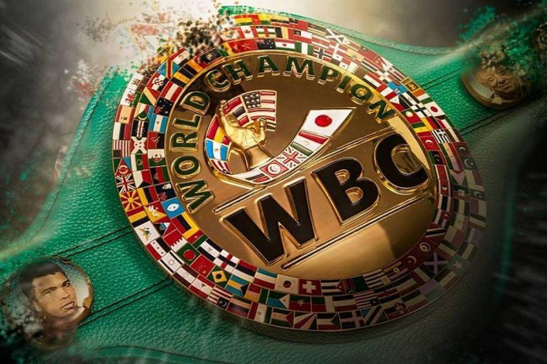

Torneos y Campeonatos Importantes

Campeonato Mundial WBC
Uno de los títulos más prestigiosos del boxeo profesional, reconocido mundialmente.

Unificación de Títulos
Cuando un boxeador logra reunir varios cinturones de diferentes organizaciones.

Países con Más Campeones
México, Estados Unidos y el Reino Unido destacan por su gran cantidad de campeones mundiales.